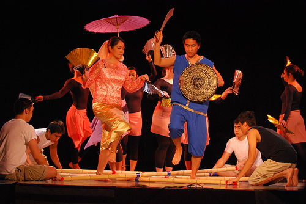
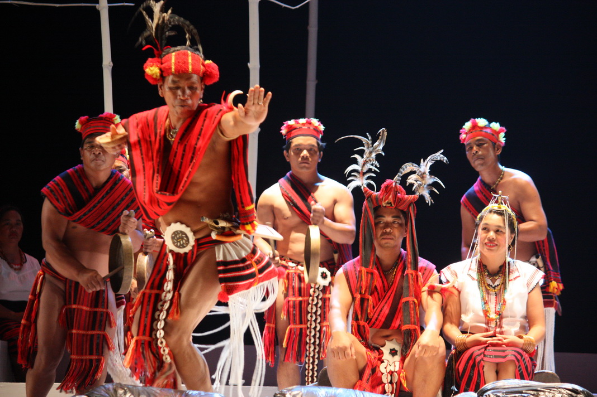
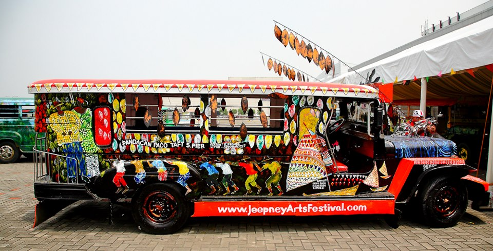
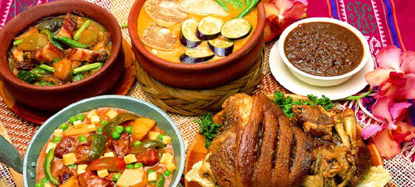
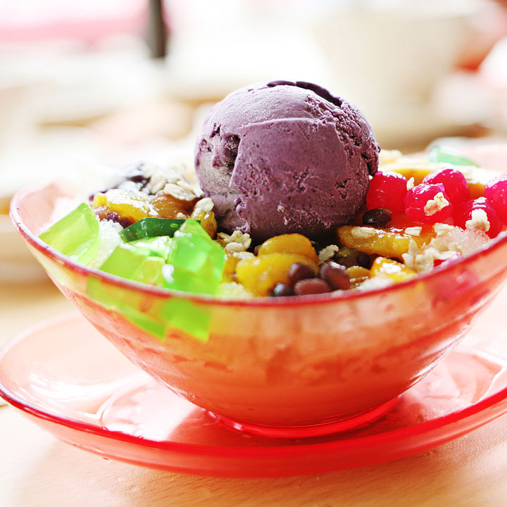

Three centuries under Spanish rule followed by 50 years of American influence has made the Philippines an Asian country unlike any other. Through a thick layer of Spain and America, you can glimpse the Filipino soul trying to express its unique, cultural identity through creativity.
Through music and dance
Most provinces have their own identifying folk dances wherein they showcase the elegance and beauty of the way they do things, the way they dress, the way they see things as shown in different paintings, as they have been influenced by events that happened in their history. 
Through festivals
Their love of sosyalan (socializing), dancing and music, culminate in the province-wide street party and town talent show - the fiesta (festival). Usually a celebration of the earth's bounty, be ready to dance in the streets to tribal drum rhythms (listen for the Latin influence). Or simply marvel at elaborate floats blooming with the season's harvest and the town folk's crafty work. From masquerades to mud fests, pilgrim processions to pageant parties, our island-style parties are open to everyone.
Through art
Naturally artistic, you'll see their penchant for color and craftsmanship even outside museums and galleries. Pay attention. It can be seen in our handicraft, design, fashion. Spot it in our churches or our parks. It can be loud like our jeepneys or as clean as our embroidery, as brash as our tribal tattoos or as delicate as Lang Dulay's weaving.
Through food
Our distinct cuisine came from the comfort food that reminds Filipinos of family, home, and simple joys. Its many-layered flavors are expressed differently from kitchen to kitchen. So try to get invited as often as you can! Take the national dish, adobo (pork stewed in garlic, soy sauce and vinegar). It has as many recipes as we have islands. But we all share it. With islands so diverse, Philippine culture is a buffet or fun and festivity. Take your pick. Wherever you go, you'll be welcomed by people as warm as summer. As Lonely Planet once stated, it's worth a trip here just to see the famous Filipino smile.
